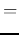

The twin-T filter

The twin-T network is composed of two T-networks:
When the output is open-circuit, i.e., , the frequency
response function of the twin-T network can be found to be
(see here):
|  | |||
When this notch filter is used in a negative feedback loop of an amplifier, it becomes an oscillator.

The active twin-T filter
The bandwidth
may be too large for
most applications due to the small quality factor  . To overcome
this problem, an active filter containing two op-amp followers (with
unity gain ) can be used to introduce a positive feedback loop as
shown below:
. To overcome
this problem, an active filter containing two op-amp followers (with
unity gain ) can be used to introduce a positive feedback loop as
shown below:

Now the common terminal of the twin-T filter is no longer grounded,
instead it is connected a potentiometer, a voltage divider composed
of  and
and  , to form a feedback loop by which a fraction of the
output
, to form a feedback loop by which a fraction of the
output  is fed back:
is fed back:
It can be shown (see here)
that the frequency response function of this active twin-T filter is
The bridged T filter
If in the RCR T-network the vertical capacitor branch is dropped,
i.e.,  , the twin-T network becomes a bridged T network. Now
we have , while the CRC T-network is still the same with
, we get:
, the twin-T network becomes a bridged T network. Now
we have , while the CRC T-network is still the same with
, we get: